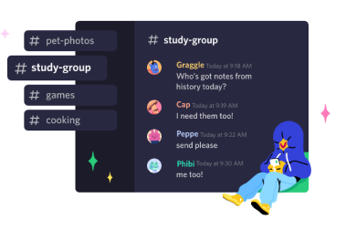
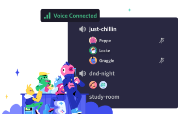
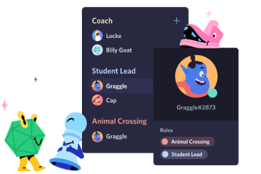
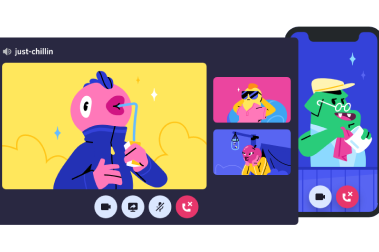

…onde você possa pertencer a um clube escolar, um grupo de gamers, ou uma comunidade artística
mundial. Onde você e alguns amigos possam passar um tempo juntos. Um lugar que torna fácil conversar
todos os dias e socializar com mais frequência.

Crie um espaço controlado por convite onde você se sinta em casa
Os servidores Discord são organizados em canais com assuntos para vocês colaborarem, compartilharem ou
simplesmente falarem do dia sem entupir um chat geral.

Aqui é fácil se encontrar
Entre no canal de voz quando estiver à toa. Amigos no mesmo servidor podem te ver e entrar
imediatamente, sem nem ter que fazer a chamada.

Para poucos e para muitos
Organize qualquer comunidade com ferramentas de moderação e acesso personalizado a membros. Dê poderes
especiais aos membros, monte canais privados e muito mais.

TECNOLOGIA DE CONEXÃO CONFIÁVEL
Voz e vídeo de baixa latência, para você conversar como se estivesse na mesma sala. Dê um joinha por
vídeo, veja amigos transmitirem a jogatina do dia ou junte uma galera pra desenhar na tela
compartilhada.